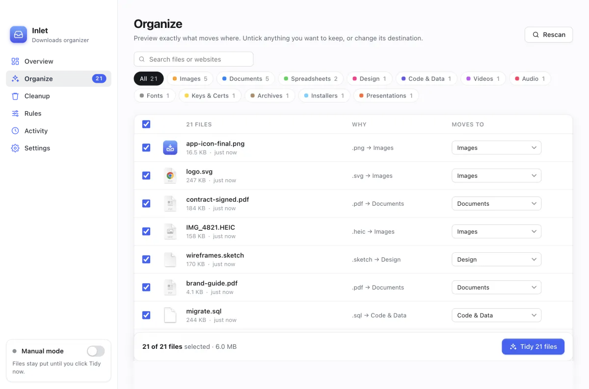
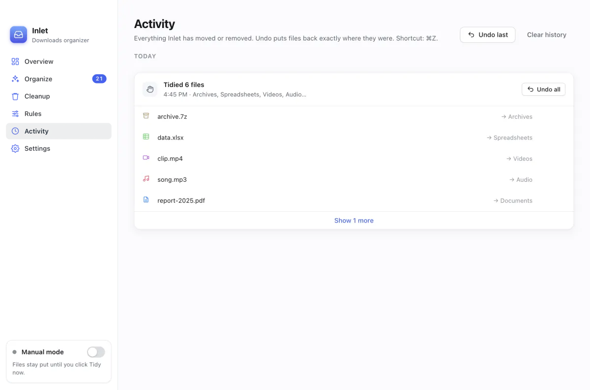

Manual Default
See every file, where it will go and why, before anything moves. Change any destination, then click Tidy now.
Free & open source · for Mac
Inlet files every download into the right folder the moment it finishes, and finds anything you describe, like pdfs from github last week
. Nothing is ever deleted, everything can be undone, and your files never leave your Mac.
Free · One installer for Apple silicon and Intel · macOS 13 Ventura or later
Inlet is a Mac app. Open this page on your Mac to download it, or .
Tidy
Images, documents, installers, videos, archives and more go into their own folders. You choose whether Inlet does it on its own or waits for you.
See every file, where it will go and why, before anything moves. Change any destination, then click Tidy now.
Each new download is sorted once it has finished downloading. Half-finished .crdownload, .part and .download files are never touched.

Find
Press ⌘F and type what you remember, in your own words. Inlet shows what it understood, and says why each file matched.
An example of how searches look. Your results come from your own files.
| You type | Inlet looks for |
|---|---|
| pdfs from github last week | PDFs · downloaded from github.com · during last week |
| big videos I haven’t opened in a month | videos · over 50 MB · not opened in 30 days |
| the contract I signed in July | “contract” or “signed” in the name or text · from July |
| airdropped photos | images · received with AirDrop |
| what did Inlet move today | today’s moves, from Inlet’s own history |
Remembers
macOS forgets which website a file came from once you unzip it, AirDrop it or save it from another app. Inlet notes the website and app of every download the moment it arrives, and unzipped files keep their archive’s source.
Hover over a file to see it, search by it (stuff from figma
), or sort by it with a rule. You can see, export or clear this history at any time. It stays on your Mac.
And more
Match by name, extension, size, age, website, Finder kind or the text inside a file. Rules can rename as they move: scan0001.pdf becomes Scans/Scan 2026-09-25.pdf.
Move a file somewhere else, in Inlet or in Finder, and it suggests a rule for next time. Drag a file back into Downloads and Inlet leaves it alone.
Find files you haven’t opened in months, and duplicates. Archive or remove them. Removed files wait 30 days before they go to the Trash.
Send each category anywhere, add date subfolders like Images/2026-09, and turn off what you don’t need.
Export and import your rules, or keep them in sync through a folder like iCloud Drive.
Keys, certificates and credential files get their own Keys & Certs folder instead of being mixed in with documents.

Safe by design
report (1).pdf.Install
One installer works on every Mac, Apple silicon and Intel alike. Needs macOS 13 Ventura or later.
Get Inlet.pkg from the button below, or from GitHub Releases.
Right-click the .pkg, choose Open, then Open again. See the note below for why.
Click Continue, Agree and Install. Inlet opens by itself and appears in your menu bar. Click Allow when it asks to read Downloads.
FAQ
Yes. No trial, no subscription, no ads, no account. It’s open source under the MIT license, made by Tech Reign Era Services.
Inlet never deletes or overwrites anything. It only moves files, and every move is logged so you can undo it. Manual mode, the default, shows you a preview before anything moves.
No. The only thing Inlet asks the internet is whether there’s a new version (from GitHub, sending nothing about you or your files), and you can turn that off in Settings. Find uses macOS Spotlight and Inlet’s own records, not an AI service. Settings and history stay in ~/Library/Application Support/Inlet.
Inlet runs on macOS 13 Ventura or later, on both Apple silicon (M1 and newer) and Intel Macs. There’s one installer for both.
Hazel is a powerful paid tool for automating any folder. Inlet is free and focused on one job: keeping Downloads (and folders like Desktop) tidy, with a preview before anything moves, undo for everything, and a way to find files by describing them.
Download the new installer and run it. It asks you to quit Inlet first, and keeps your settings, rules and history. To hear about new versions, open the GitHub page, click Watch, and choose Releases.
Quit Inlet from its menu bar icon and move it from Applications to the Trash. To remove its settings and history too, delete ~/Library/Application Support/Inlet. Your sorted files stay where they are.
Please open an issue or start a discussion. Pull requests are welcome too.
Free, open source, and yours to keep.
Free · One installer for Apple silicon and Intel · macOS 13 Ventura or later